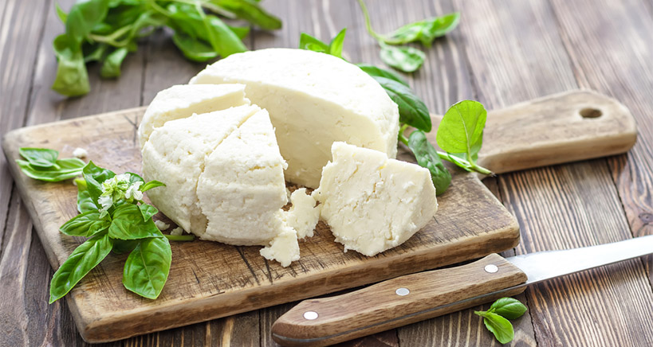

Soft cheeses
These grow a white, bloomy rind of Penicillium candidum that ripens the cheese from the outside in. Under the rind, the paste softens toward liquid as it ages.
Character: a velvety edible rind over a paste that ranges from chalky (young) to molten (ripe). Flavors of mushroom, butter, and cream.
Notable members: Brie, Camembert, and triple-creams like Brillat- Savarin.
How to enjoy: serve at room temperature — cold Brie is a crime the Society will forgive exactly once. And yes, eat the rind. The rind is the point.
Did you know? Camembert legend credits a Norman farmer, Marie Harel, with the recipe in 1791 — advice she supposedly received from a priest hiding from the Revolution.